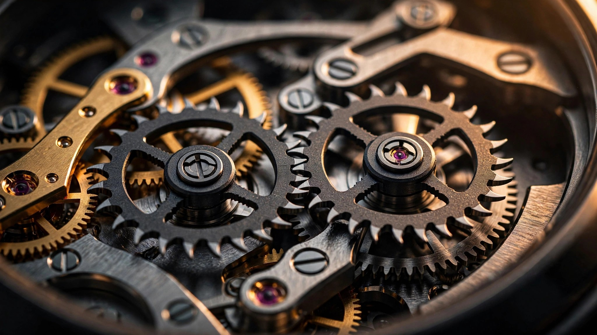

Lock and Impulse from the Same Tooth — How Rolex's Dynapulse Solved a 236-Year-Old Escapement Problem
Inside the Caliber 7135: silicon dual wheels, ceramic balance pivots, and a geometric insight that makes Breguet's dream actually work

In 1789, Abraham-Louis Breguet sketched what he believed was the most natural way to power a balance wheel. Two mirrored escape wheels, geared together, would alternately deliver direct impulse to the oscillator. He called it the échappement naturel, and the concept was elegant. It was also, for all practical purposes, unfixable. For 236 years, dual-wheel escapements carried a structural deficiency that no watchmaker could fully resolve: a dead angle where the lever traveled without transmitting or receiving energy, bleeding efficiency with every oscillation.
Rolex's Caliber 7135, debuted inside the Land-Dweller at Watches and Wonders 2025, inverts the fundamental relationship between locking and impulse in a dual-wheel system, producing an escapement that Rolex claims is 30% more efficient than the Swiss lever. Sixteen patents cover the caliber alone. At the core sits a single geometric insight: the escape wheel that locks the lever is the same one that impulses it. One tooth, one continuous engagement, zero dead angle.
The Watch Itself
Before the movement, a word about where it lives. The Land-Dweller is Rolex's first integrated-bracelet sports watch in decades, offered in 40 mm and 36 mm sizes across white Rolesor, Everose gold, and platinum. Its tonneau case recalls the Oysterquartz of the late 1970s but measures just 9.7 mm thick. A flat-link Jubilee bracelet flows from the lugs without visible transition, and the honeycomb-pattern dial is engraved with femtosecond lasers at depths between 4 and 25 micrometers. Water resistance is 100 meters. At first glance, it reads as a refined dressy sport watch. What sets it apart is entirely invisible from the dial side.
Where Previous Dual-Wheel Designs Failed
Understanding the Dynapulse requires understanding what went wrong before. After Breguet, the most significant attempt to move beyond the Swiss lever came from George Daniels in the 1970s. His co-axial escapement, eventually industrialized by Omega, replaced sliding friction with tangential impulse at the escape wheel, a genuine advance that extended service intervals. But it remained a single-wheel design, and its efficiency gain over the Swiss lever, while meaningful, was bounded by that architecture.
Ulysse Nardin pushed further with the Dual Ulysse escapement, first deployed in the Freak. Two meshing escape wheels alternated roles: one locked the lever while the other positioned itself to deliver impulse. After unlocking, the lever had to travel from the locking contact surface to the impulse contact surface before energy could pass to the balance.
During that angular transit, the lever was moving but doing nothing useful. Watchmakers call this the dead angle, and in the Dual Ulysse it introduced an efficiency penalty on every beat. Worse, the driven escape wheel was under no tension from its driving counterpart when positioned for impulse. Freed from gear meshing pressure, the driven wheel could flutter. Normal play in the teeth became asymmetric impulse values between the two wheels, degrading rate stability.
Ulysse Nardin eventually discontinued the Dual Ulysse in favor of a conventional Swiss lever. Breguet's concept went back into the drawer.
One Tooth Does Both Jobs
Rolex's solution is elegant in principle. In the Dynapulse, two silicon escape wheels mesh together. Only one connects to the gear train through a silicon transmission wheel. Each escape wheel performs both locking and impulse using the same tooth, in one continuous engagement.
A single tooth on the driving escape wheel first holds the lever in place during the locking phase. When the balance pin releases the lock, that identical tooth immediately pushes against an adjacent impulse surface on the lever to transmit energy. No transit between separate contact surfaces, no angular motion wasted. Locked, released, impulsed, all in an uninterrupted sequence.
When roles switch, the driven escape wheel locks the lever. Because its driving counterpart immediately tensions it through their meshed teeth, the impulse value is identical regardless of which wheel is active. Flutter disappears. Symmetric impulse is inherent to the geometry rather than dependent on manufacturing tolerance.
Silicon Makes It Possible
Breguet worked in steel. So did everyone who attempted dual-wheel escapements after him. Steel introduces sliding friction at contact surfaces and adds mass that resists the rapid direction changes an escapement demands. Rolex built every moving component of the Dynapulse from silicon, and the material properties matter at every scale.
Silicon is roughly one-third the density of steel, so each component carries substantially less rotational inertia. When an escape wheel tooth engages the lever, less energy is consumed accelerating and decelerating the parts. Silicon is also completely non-magnetic, which becomes critical at the Caliber 7135's operating frequency. At 36,000 vibrations per hour (5 Hz), each escape wheel rotates 50 times per minute. Any ferromagnetic material spinning that fast in a magnetic field would induce eddy currents that brake the wheel.
Each escape wheel carries six active teeth shaped like shark fins for locking and impulse. Interleaved with them are U-shaped blade profiles that mesh with teeth on the companion wheel. Silicon enables these organic forms with the precision that rolling surface-to-surface contact demands. Rolex notes that impulse delivery is tangential, meaning the force vector aligns with the lever's rotational arc. Minimal energy dissipates as heat or vibration.
One consequence of the geometry is that Dynapulse omits the conventional dart-and-roller safety system found in every Swiss lever escapement and every alternative on the market, including the Omega co-axial. Security is built into the locking surfaces instead. When an escape wheel locks the lever, the tooth tip seats into a subtle V-shaped notch sculpted into the lever. The tangential force is directed consistently toward the lever's pivot point, lodging the tip deeper into the notch rather than pushing it out. Stable equilibrium without a separate guard component, and one fewer source of friction in the system.
The Oscillator: Ceramic, Ecobrass, and a Thicker Hairspring
Rolex redesigned every component of the balance assembly for the Caliber 7135, driven by one requirement: no part of the timing organ should react to magnetic fields at any practical strength.
Traditional balance pivots are hardened steel, which is ferromagnetic. A magnetized pivot will subtly pull the hairspring off-center on each rotation, introducing rate error that is difficult to diagnose and tedious to fix. Rolex replaced steel with a composite ceramic, likely an improved zirconia formulation based on patent filings (European patent EP4399575A1). Ceramic is non-magnetic and dimensionally stable under shock. Shaping it to watchmaking tolerances requires femtosecond laser machining, where each pulse is a quadrillionth of a second, removing material through cold ablation without inducing internal stress. The pivot surfaces are then polished to a nanometric finish, reducing friction against the jewel bearing.
According to several published accounts of the Land-Dweller press briefing, Olivier Greim of Rolex's R&D division notes that the ceramic pivots can theoretically function without lubrication. In practice, Rolex applies lubricant measured in nanoliters, assembled and tested as a sub-assembly before installation. Candor about lubrication is itself unusual in an industry where brands routinely claim novel escapements run dry when they do not.
Below the pivot, the balance wheel marks another departure. Glucydur, the beryllium-copper-iron alloy that has served as the industry standard for decades, is generally classified as non-magnetizable, and it works well at conventional frequencies. But at 5 Hz, eddy currents induced in any alloy containing even trace ferromagnetic elements create subtle braking forces that sap the balance's amplitude. Rolex switched to an optimized brass alloy that patent documents suggest is CuZn21Si3P, a lead-free formulation known industrially as Ecobrass. Its density provides adequate inertia for the balance wheel's geometry. Its high electrical resistivity minimizes eddy-current losses at the elevated operating frequency, and its complete absence of iron and nickel eliminates ferromagnetic susceptibility.
Rolex's Syloxi silicon hairspring, used in the brand's movements for years, carries the same two-point anchoring system in the Caliber 7135. But running at 5 Hz instead of 4 Hz demanded a stiffer spring. Rolex thickened the coils and increased their rigidity, raising the stiffness constant so the spring stores and releases energy fast enough to match the pace of 36,000 oscillations per hour without amplitude loss.
Sixty-Six Hours at Five Hertz
Fast-beat movements are energy hungry. A 5 Hz caliber consumes power 25% faster than a 4 Hz caliber running otherwise identical components. Historically, this tradeoff limited high-frequency movements to short power reserves, which is why most 36,000 vph calibers cluster around 40 to 55 hours.
Caliber 7135 delivers 66 hours. The Dynapulse's efficiency gain accounts for much of this. Less energy wasted per beat means each unwind of the mainspring carries the balance through more oscillations. Rolex complemented the escapement with a five-wheel going train (one more than the standard four-wheel layout), with the finishing wheel also made from silicon to minimize inertia at the final stage of power delivery.
A fully wound Land-Dweller can sit unworn from Friday evening through Monday morning and keep running, despite beating 25% faster than the Datejust on the desk beside it.
What Silicon Cannot Do
Silicon escapements carry a tradeoff that this article would be incomplete without acknowledging. A silicon lever or escape wheel cannot be polished, adjusted, or repaired by a watchmaker with traditional tools. When a silicon component fractures, whether from an extreme shock or a manufacturing defect that survived quality control, the entire escapement assembly is replaced as a unit. For a brand that markets perpetual longevity, this shifts the maintenance model from the traditional watchmaker's bench to a factory service paradigm.
Rolex's manufacturing scale mitigates the cost side of that equation, and silicon's shock resistance is genuinely excellent in normal wear. But the dual-wheel architecture adds manufacturing complexity: two escape wheels must be fabricated to tighter tolerances than one, and their meshing geometry must be validated as a pair. Whether Dynapulse proves as robust as the Chronergy it supplements will take years of field data to confirm. Rolex has earned the benefit of the doubt, but the claim deserves observation, not faith.
From Breguet's Sketch to Rolex's Factory Floor
Breguet's natural escapement was conceived as a theoretical ideal. Two wheels delivering symmetric, direct impulse to the balance represented, in his view, the purest way to sustain oscillation. But the concept depended on manufacturing precision that 18th-century tooling could not deliver, and the geometric constraints produced dead angles that no amount of finishing could eliminate.
Rolex did not simply miniaturize the idea or translate it into better materials. Dynapulse abandons direct impulse entirely, choosing an indirect path through a lever. It abandons separate locking and impulse surfaces, collapsing both functions onto a single tooth. It abandons the guard pin, embedding security into the locking geometry. And it abandons ferromagnetic materials at every point in the oscillating system, from escape wheel to hairspring anchor.
What remains from Breguet is the core architecture: two meshing escape wheels, alternating their engagement. Everything else is new. And because Dynapulse occupies roughly the same spatial envelope as Chronergy, it is built to propagate across the Rolex range. If a dual-wheel silicon escapement can be produced at Rolex's scale and prove its reliability in daily wear, the Swiss lever's 250-year dominance is no longer a settled question. Caliber 7135 is not a concept piece or a limited edition showcase. It is the beginning of a manufacturing rollout, produced at a scale that Breguet could not have imagined for an escapement he could not have built.
| Caliber | Rolex 7135 |
|---|---|
| Frequency | 36,000 vph (5 Hz) |
| Power reserve | 66 hours |
| Escapement | Dynapulse (dual-wheel, indirect tangential impulse, silicon) |
| Balance wheel | Optimized brass alloy (patent-inferred CuZn21Si3P, non-ferromagnetic) |
| Balance pivot | Composite ceramic (zirconia-based), femtosecond laser machined |
| Hairspring | Modified Syloxi silicon, thickened coils for 5 Hz |
| Going train | Five wheels (silicon finishing wheel) |
| Efficiency vs. Swiss lever | +30% (Rolex claim; Chronergy: +15%) |
| Movement height | 4.68 mm |
| Patents (caliber-specific) | 16 |
| Shock protection | Paraflex with double-cone mounting, low-stiffness spring |
| Case sizes | 40 mm and 36 mm, 9.7 mm thick, 100 m water resistance |